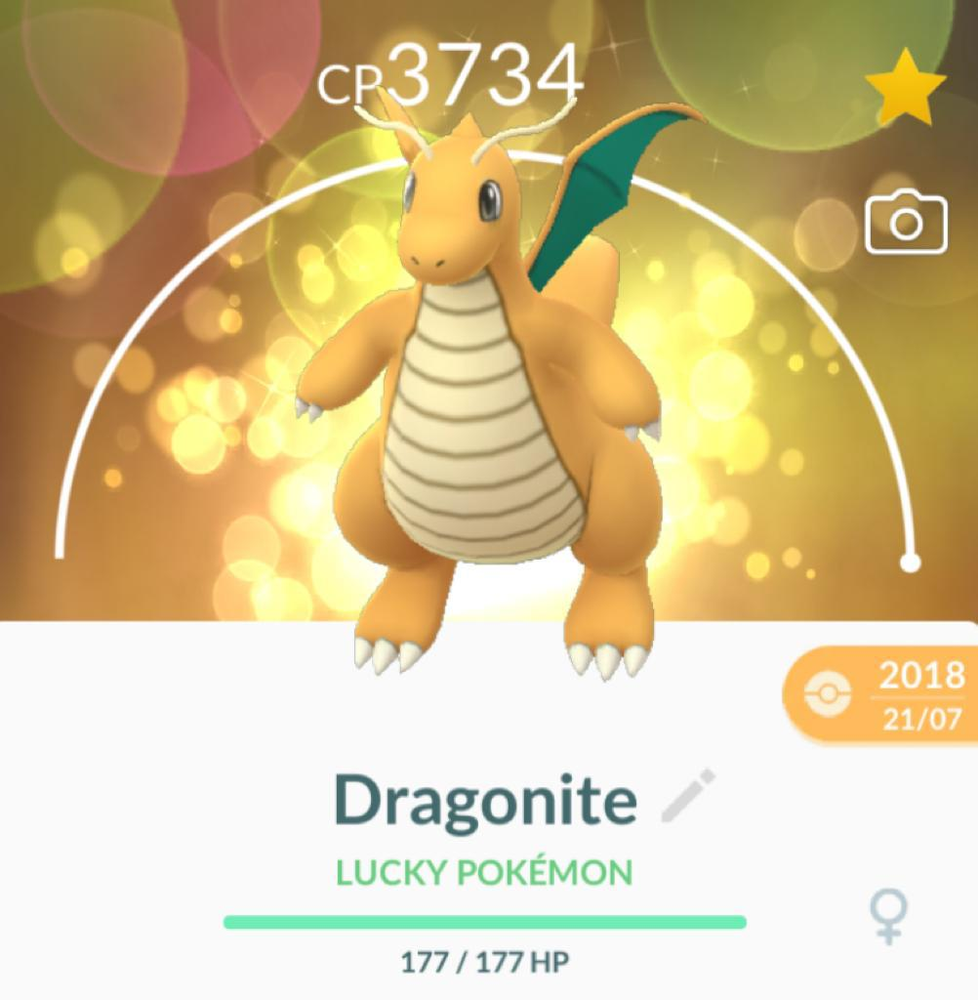
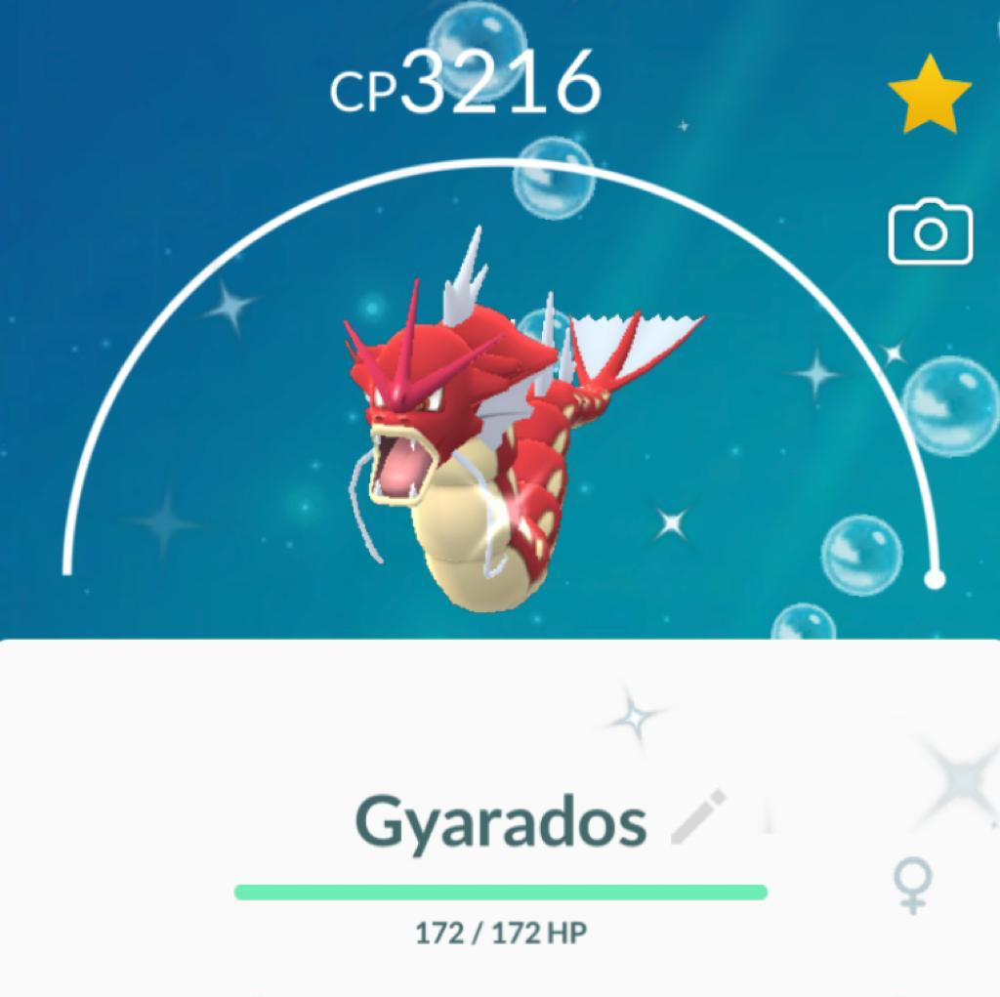
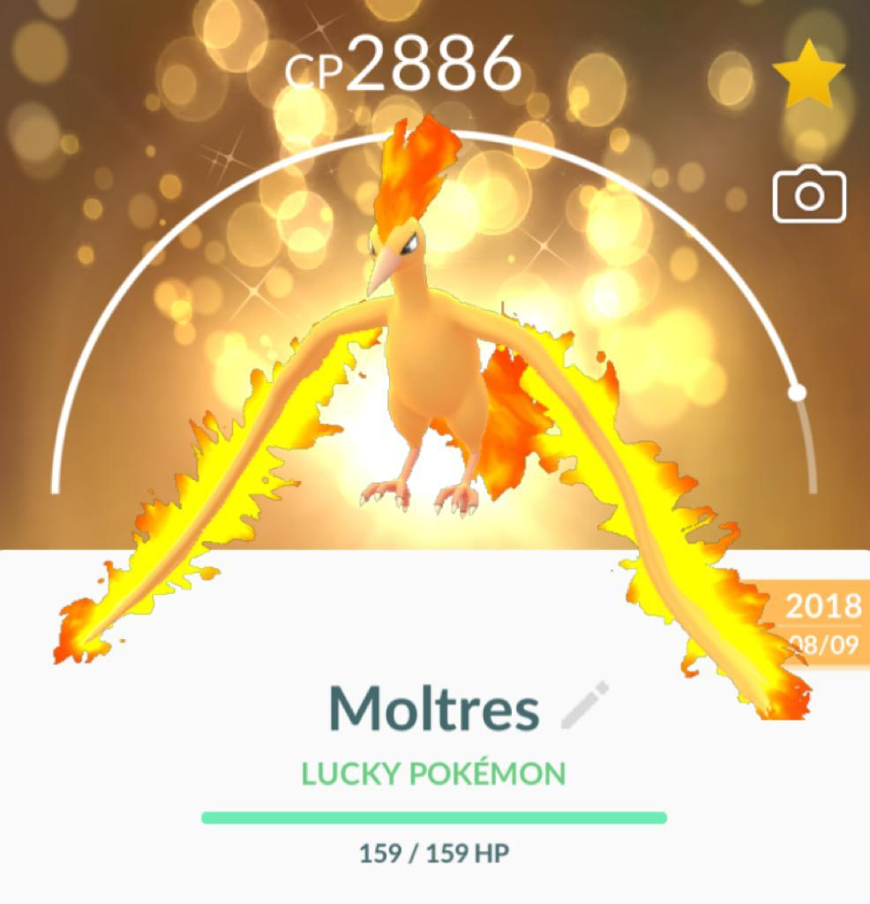

Mewtwo is a legendary Psychic Pokémon. It is vulnerable to Bug, Dark and Ghost moves. Mewtwo's strongest moveset is Confusion & Psychic and it has a Max CP of 4,178. Mewtwo is a Pokémon that was created by genetic manipulation. However, even though the scientific power of humans created this Pokémon's body, they failed to endow Mewtwo with a compassionate heart.

Dragonite is a Dragon & Flying Pokémon which evolves from Dragonair. It is vulnerable to Ice, Fairy, Dragon and Rock moves. Dragonite's strongest moveset is Dragon Tail & Draco Meteor and it has a Max CP of 3,792. Dragonite is capable of circling the globe in just 16 hours. It is a kindhearted Pokémon that leads lost and foundering ships in a storm to the safety of land.

Gyarados is a Water & Flying Pokémon which evolves from Magikarp. It is vulnerable to Electric and Rock moves. Gyarados's strongest moveset is Waterfall & Hydro Pump and it has a Max CP of 3,391. When Magikarp evolves into Gyarados, its brain cells undergo a structural transformation. It is said that this transformation is to blame for this Pokémon's wildly violent nature.

Moltres is a legendary bird Pokémon that can control fire. If injured, it is said to dip its body in the molten magma of a volcano to burn and heal itself. FireRed. One of the legendary bird Pokémon. Those who see it are overwhelmed by its orange wings that seem to be on fire.